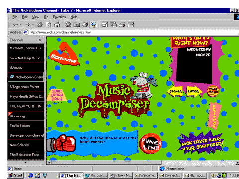
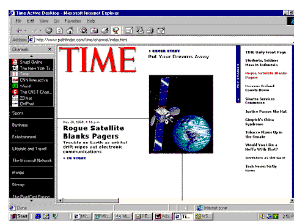
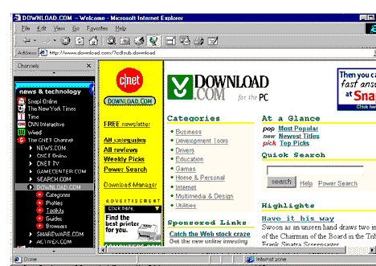
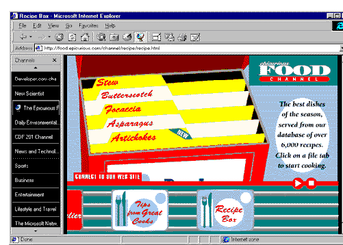
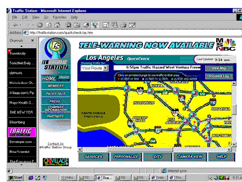

|
| ||
|
| ||
June 26, 1998
Contents
Introduction
Let It Stand Alone
Keep It Current
Keep Your Navigation Clear
Soup It Up
Make It Personal
Keep It Clean
For More Information
Conclusion
Active Channel™ technology has been around for a while, and although we've published lots of pieces describing how to build channels (see Channels 101 and CDF 201: Beyond the Basics, by his eminence George Young), we haven't spent much time explaining what we think good channels look like.
Well, never let it be said we don't like our opinions known. This article will provide what we consider to be a useful set of guidelines for setting up effective channels. Your channels and your site can, and ideally should, work in tandem. Your channel provides a perfect forum for delivering timely, succinct pieces of news and information, while your Web site is the place to turn (or, more accurately, click) to for more expansive, comprehensive content. They should complement each other.
This list is not comprehensive or even universally applicable. But that's only because channels themselves can vary so greatly. An amusing trivia game can hardly be expected to follow the same rules as a fast-breaking news channel. As always, look at our advice through the filter of your site's needs and aspirations.
Channels are not simply a mechanism to get folks to click through to your site (although many successful channels will cause users to do so). Channels are information-delivery vehicles in their own right. In that context, simply broadcasting teaser headlines is probably not the best use of your and your readers' time and bandwidth. If you want visitors to click through to your site, use the channel to focus their visit.
On the other hand, don't make a channel stand alone by duplicating your site content in your channel. At least avoid having the duplicate content be what displays when a user clicks through to your site. The amount of information you provide on your channel should reflect how often it's updated and its purpose.
If the channel is the event, however, you want to include enough information to provide closure without going to the Web site. The Nickelodeon channel, for example, has a few simple, fun activities that take place entirely within the channel.

Figure 1. Nickelodeon's activity-based channel
If you're going to make the commitment to develop a channel, you need to be in it for the long haul. That means keeping it updated on a regular, or at least frequent, basis. Of course, the update frequency should reflect the nature of the content itself. While a recipe series on the enchanting possibilities of elephant garlic doesn't really lend itself to a rigid "shelf-life," users are likely to doubt the value of their subscriptions if that's all they see for a month.
Other channels, to paraphrase a classic economics tenet, have a clear time value of information. While the newsstand version of Time magazine comes out weekly, its online sibling mixes weekly and daily content. The combination of the Web's low distribution costs and tradition of frequent updates probably prodded the Time folks to mix the content delivery schedule.

Figure 2. Time's channel varies the frequency of content updating
For sites that have lots of content, the Channel Bar provides a useful navigational tree, similar to a table-of-contents frameset but without the pesky baggage frames create.
Use subheads of the nesting to keep the navigation clear. Try to restrain the use of headings to two levels (it's a channel, not a book). If parts of a channel updated at different times, make sure the updated content is easy to find by pointing to it from the main channel page. If the new content is buried a few levels down, provide a link. If the links go outside the channel to your main site, provide an icon letting visitors know where they are going.
Navigation goes beyond using the channel TOC to providing adequate cues to features within the page itself. Mouseovers that change text styles or swap images can identify what otherwise might be less-than-obvious links or drop-downs. It's helpful to provide navigation within the channel page itself, especially for complex channels with many sections and subsections. The CNET channel, for example, actually uses the navigation component enabled by CDF files to give users a multilevel view of the CNET site. The result is richer navigational control for Internet Explorer 4.0 or later users compared with that for users of other browsers.

Figure 3. The CNET channel uses nested navigation
One of the biggest advantages to using channels, of course, is the fact that there are no "down-level" considerations to worry about. As a result, you should feel free to use all the features of Internet Explorer 4.0 or later: DHTML, CSS, data binding, the Tabular Data Control; whatever technologies bring out the best in your site's information.
Several channels use data binding to access, display, and redisplay information. The aforementioned Nickelodeon channel uses data binding to let visitors know what's playing on the Nickelodeon cable channel. The Epicurious Food channel uses data binding to control the access and display of its featured recipes.

Figure 4. Epicurious' recipe-box display that uses data binding
Use style sheets that create precise text formatting, object positioning, and multimedia effects. Lots of channels use DHTML filters to control how images display. DirectAnimation™ controls can be used to guide when and how animations appear. (My personal favorite is the floating DHTML traffic helicopter on the Traffic Station shown in the next point.)
Just as with regular Web pages, personalizing channel information is an excellent way to draw and retain subscribers. One of my favorite examples of personalization is the Traffic Station channel. On Traffic Station, I can pre-select the routes I take most often: to school, work, shopping, and wherever I go regularly.
Once I've provided Traffic Station with my various commutes, I can select any one of them from a drop-down menu and find out whether any traffic disruptions have occurred. Presumably I'll then be able to wait until the incident is over or (difficult for the navigationally challenged like myself) find another way to get to my destination.

Figure 5. Personalized route status on Traffic Station channel
Other personalization schemes can be just as valuable. Different channels allow me to pre-select the sports feeds I want (no curling reports, thank you), subscribe to news on my favorite stars, and so forth.
Like all new technologies, channels come with their own set of optimizing tasks and issues to learn about. For starters, minimize the size of downloads. Keep yours below 1 MB for the initial subscription files, and at about 250K for updates. Be prepared to reduce those numbers drastically if many of your subscribers use modems and update manually to view your content.
Channels raise performance issues just like those for "traditional" Web pages. For example, although subscriptions can be set to download content in the wee hours of the morning (when traffic is low and the subscribing computer is ostensibly not being used), many people shut their computers down to conserve energy. Thus, they'll often manually update their subscriptions during the day. So keep files as small as possible to keep downloads under 10 seconds. Remember that every 100K of file size takes about half a minute to download over a 28.8-speed modem.
And then there's performance once you get the files down to the computer. That means no piggy graphics lumbering across the screen (unless, of course, your channel happens to concern itself with pork). Use cascading style sheets (CSS) for greater control over text and image layout. Test to make sure that all the elements that are intended to work offline do so. Make sure all updates are efficient and contain only the content that changes. Keep animations efficient by using DirectAnimation controls.
If you're interested in developing a channel on your own and haven't yet perused the Web Workshop Content & Component Delivery section, you're missing out on the definitive documentation for channels. Start with a general overview about the process of Creating Active Channels.
Channels offer two key advantages that developers can exploit:
The challenge for developers is how to use Active Channel technology to help deliver their information. We hope you've found this piece useful. But we don't pretend to know everything. Really. In fact, we welcome your input, because you're the folks who have been developing channels. What have we missed? What lessons have you learned that you'd like to share? What features would make your life easier?
Meanwhile, good luck with your channel efforts.
Did you find this material useful? Gripes? Compliments? Suggestions for other articles? Write us!
© 1999 Microsoft Corporation. All rights reserved. Terms of use.